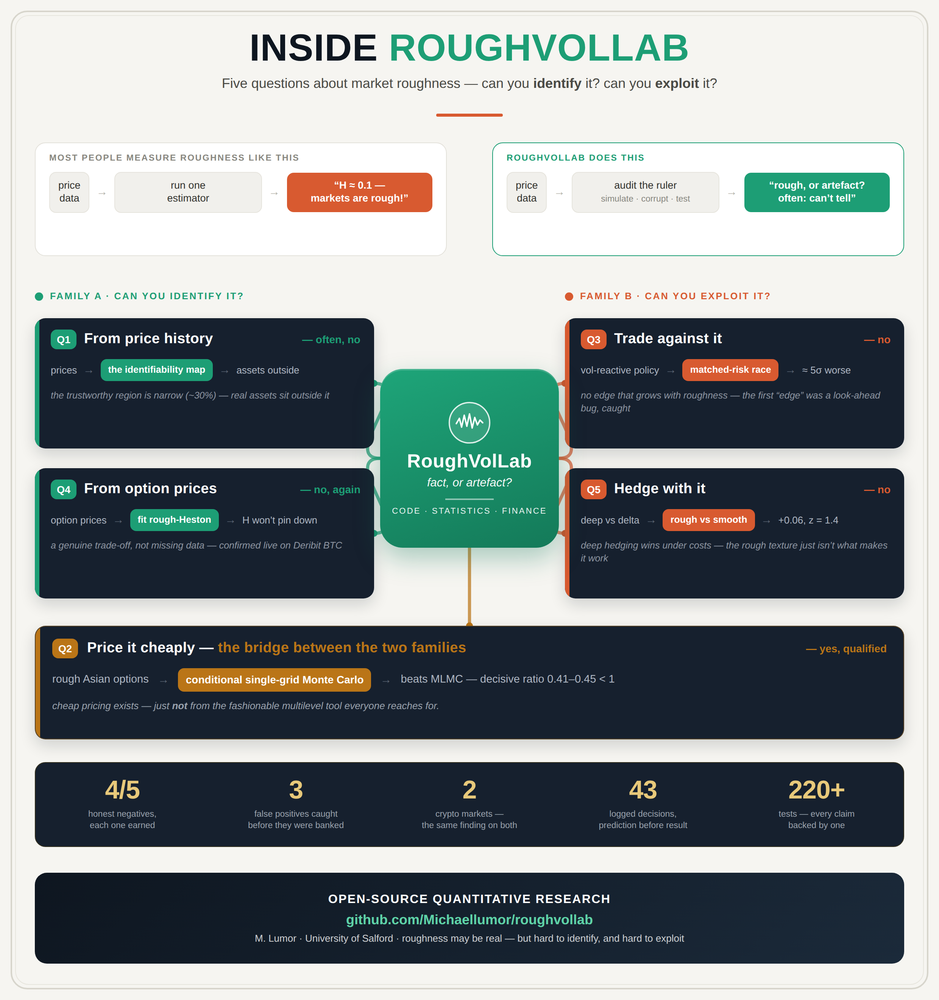
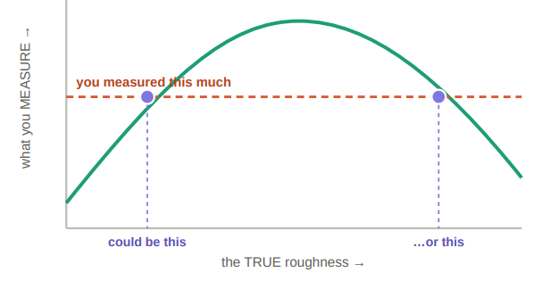

A deceptively simple question — and a two-year attempt to answer it honestly, checking every claim against a known answer before believing it.
The simplest way to understand RoughVolLab is that it lives where three different worlds meet. None of the three on its own is the project; the project is the overlap. Everything in it has to satisfy all three at once.
A real, working piece of software — properly built, with automatic checks that catch mistakes. Not a pile of throwaway scripts.
Careful methods for measuring a subtle property of data — and, just as importantly, for knowing when that measurement can be trusted.
The data is real markets — Bitcoin, Ethereum, the S&P 500 — and the long-term goal is better decisions about real financial risk.
Hold on to this picture. The rest of the guide is really just these three strands being braided together, one careful step at a time. And it's worth naming: that exact combination — code, statistics, and finance, fused into something that runs — is the job description of a quantitative researcher. Not adjacent to it; it is it.
Prices in financial markets jump around. Volatility is just a word for how much they jump around — calm days have low volatility, panicky days have high volatility.
Here's the twist. Volatility isn't fixed; it changes over time. And for decades, the standard models assumed it changes smoothly, drifting up and down like a gentle tide. In recent years, evidence has piled up that this is wrong — that volatility is actually "rough": it changes direction far more erratically and jaggedly than the smooth models expect, almost like static.
Smooth vs. rough. A smooth coastline curves gently — zoom in and it stays gentle. A rough coastline is jagged at every scale — zoom in and you find more jaggedness. The big debate in this field is which kind of thing market volatility really is.
Why does anyone care? Because almost every tool used to price financial options and manage risk is built on an assumption about how volatility behaves. If the smooth assumption is wrong, a lot of those tools are quietly mis-calibrated. So "is volatility rough, and how would we even know?" is not an academic nicety — it sits underneath real money.
Is what we're seeing real — or an artefact of how we looked?
RoughVolLab is built like an operating system: a small, heavily-tested core sits in the middle, and every layer plugs into it. You don't move up a layer until the one below is solid and checked. Here is the whole architecture — and, crucially, what makes it different from most work in the field.
On top of that architecture, RoughVolLab asks five questions about roughness. They split cleanly into two families: one asks whether you can even identify roughness — see it, measure it, pin its value — and the other asks whether you can exploit it — trade it, hedge it, turn it into an edge. A single pricing question bridges them.

Here is each question in plain terms, with what the project found. The two families are colour-coded: teal for "can you identify it", rust for "can you exploit it", with the amber pricing question bridging the two.
Roughness is measured through a noisy, discretely-sampled stand-in for the true (hidden) volatility. So before arguing whether measured roughness is genuine, the project asks a prior question: for which combinations of conditions is the roughness recoverable at all? Using a verified simulator and three independent ways of measuring, it maps exactly where the answer can be trusted.
The trustworthy region exists, but it is narrow — and the region that real assets occupy (Bitcoin, Ethereum, the S&P 500) falls outside it. There, the measurement is non-identified: the data simply cannot support a confident value.
A rough model leaves a fingerprint on the pattern of option prices. So in principle, roughness should be recoverable by fitting the model to market prices — a second, independent route to Question 1. It doesn't work either. The deeper reason is worth stating plainly: roughness and a second quantity (vol-of-vol) trade off against each other. You can always give up a little of one for a little of the other and fit the same prices — so neither pins down. That trade-off, not missing data, is why it fails.
The same finding replicated exactly on a second market (Ethereum), so it is structural to crypto, not a Bitcoin quirk. A separate finding fell out: even at maximum roughness, the model under-produces the crash-fear priced into deep protective options.
Pricing options under a rough model needs large simulations. The celebrated cost-cutting tool is a technique called Multilevel Monte Carlo. Does it pay here? This is the one place the answer is yes — with a twist. For these options, the fashionable tool does not earn its keep. A simpler "conditional" trick does the real work, and works best as plain single-grid simulation, not bolted onto the fancy machinery. Cheap pricing is available — just not from the tool everyone reaches for.
If volatility has exploitable texture, a strategy that reacts to it should be able to time its trades and beat the classic execution schedule. It cannot. Compared fairly — matched risk, same market — the reactive strategy comes out clearly worse than the classical benchmark, with no advantage that grows as roughness increases.
The first run actually produced a convincing illusion of an edge — but it came from the strategy quietly peeking at the future. A built-in sanity check caught it, the illusion was removed, and the honest negative recorded. (The first of three such catches — see section 7.)
Under trading costs, a modern "deep hedging" method beats the classical approach in any model — that's a generic effect of costs, not a roughness story. So the sharp question is whether the rough structure adds anything beyond that. The test is a fair contrast: the improvement on a rough market versus the same improvement on a smooth one, everything else identical.
Deep hedging does beat the classical method under costs, robustly. But the roughness-specific extra is modest and statistically absent. Deep hedging works; the rough texture simply isn't what makes it work. This held across every cost level tested — and confirming that required catching the hardest illusion in the project (section 7).
How do you turn raw market prices into a single number for "roughness"? Through a short assembly line, where each station does one job and hands its result to the next.
That last station is the unusual one, and it's the heart of the project's honesty. Most work stops at "we measured roughness = some number." RoughVolLab adds a final step that asks: given everything that can fool this measurement, how much should we actually believe it?
The project measures roughness three independent ways on purpose. If three different methods agree, that's reassuring. If they disagree, that disagreement is itself a useful clue — it tells you the data is doing something tricky. A lot was learned from watching them disagree.
Underneath all five questions is one humbling idea. When you measure roughness on real markets, you get a number suggesting they're extremely rough. That number is real and stubborn — it doesn't go away when you look more carefully.
But — and this is the key point — the very same number can be produced by genuinely different underlying realities. So even with a clean measurement in hand, you often can't tell which reality you're actually looking at. The measurement isn't enough to decide.
A muffled voice through a wall. You can clearly hear that someone is talking — that part is real. But the wall blurs the sound so much that several different sentences would all reach your ear sounding identical. You can't recover the exact words from what you hear. The market data is like that: the roughness is audible, but the cause is muffled.

The core idea, simplified. The curve of "what you measure" against "the true roughness" rises then falls — so one measured value (the dashed line) matches two different true values (the dots). The measurement alone can't tell them apart.
The project's contribution is a clear rule for telling when a roughness measurement can be trusted to pin down the truth, and when it can't — and showing that, for the crypto markets tested, it lands squarely in the "can't pin it down" zone. Knowing the limits of what your data can tell you is its own kind of result.
Anyone can report a negative result. What makes these trustworthy is that the project repeatedly produced exciting positive results, refused to celebrate them, and dug until it found why they were false. Three times, a result that looked real was an artefact of how the computation was set up. Each is a small detective story.
The first trading experiment showed the strategy beating the classical benchmark — an apparent edge. The rule in this project is: a result that beats a known-optimal benchmark is a red flag, not a trophy. So it was checked.
The strategy had a subtle bug — it was reacting to information it shouldn't have had yet. A built-in guard was designed precisely to catch this, and it fired. With the peek removed, the edge vanished, and the honest answer was recorded.
Beating the optimal benchmark wasn't success — it was the symptom that told us something was wrong.
In the hedging experiment, a particular fancy method showed a roughness edge that looked statistically real. Suspicious, the project ran a controlled comparison against a simpler method.
The control exposed it: the fancy method had simply trained unevenly — it learned the rough market well and the smooth one poorly, and the gap between them looked like a roughness edge. It wasn't. With a fair, well-trained comparison, the edge collapsed to nothing.
The mirror image mattered too: at first the fancy method looked worse, which could be over-read as "it fails." A fair re-run showed it simply needs more training to catch up — it matches the simple method, it doesn't lose. Honesty in both directions: don't bank a false win, don't declare a false loss.
The last catch is the one the project is proudest of. Testing whether roughness helps hedging at higher trading costs, an edge appeared to emerge: at one cost level it was large and screaming "real" by every usual standard.
By every usual standard, it should have been banked. Instead it went through three escalating rounds of scrutiny — and passed the first two, looking more real each time:
The tell: a real effect is stable when you train harder; this one shrank every time (+0.362 → +0.326 → +0.033). And an untrained control quantity held perfectly constant throughout — proving the shrinking part was the training, not the roughness.
A result can be statistically significant, consistent across every run, and reproducible across two settings — and still be false. Those three things do not guarantee the computation had finished settling.
That last lesson is a genuine methodological contribution, useful well beyond this project — and it's exactly the kind of trap that catches careful people. Here it was documented with a controlled experiment rather than stumbled into.
Read down the five verdicts and a single, coherent picture emerges — not five disconnected results, but one thesis approached from five directions.
Roughness may well be a real feature of markets. But across every axis this project could test, it proved hard to identify — you can't reliably measure it from price history, and you can't back it out from option prices. And it proved hard to exploit — it gives no trading edge and no hedging edge beyond what trading costs alone explain. The one bright spot is pricing, and even there the fashionable tool loses to a simpler one.
Four negatives and one qualified positive — and the value is that every one was earned. Each claim was stress-tested in both directions: the project hunted for results that falsely looked positive (the three catches above) and guarded against dismissing something as failed when it merely needed more work. That two-sided honesty is the point.
Roughness is real — but hard to identify and hard to exploit, on every axis tested. Every claim was stress-tested, in both directions, until the truth survived.
RoughVolLab isn't built around one paper. Each strand of the work becomes a research paper of its own — several are written, and they all follow the same route to publication.
When can a roughness measurement from price history be trusted, and when can't it? The identifiability map and real-market placement.
Whether the fashionable speed-up technique actually helps for rough markets — it doesn't, which is itself worth reporting.
Does the pessimism of one theoretical rate carry over to pricing? A careful measurement showing it does not.
Backing roughness out of a live crypto option surface — from a single smile to a whole market. The second, independent non-identifiability result.
Four papers written, each building on a foundation that's already in place — with the complete five-question programme now setting up the natural next step: a unifying dissertation, and beyond it, doctoral research.
For anyone reviewing the papers: how the five questions map onto the four papers and the code that produces each answer. Q3 and Q5 are programme strands that feed the dissertation rather than standalone papers of their own.
| Question | Verdict | Paper | Code |
|---|---|---|---|
| Q1 · identify from a price history | often, no | identifiability | Layer 1c — three estimators |
| Q2 · price options cheaply | yes, qualified | pricing (rate: convergence) | Layer 1b — MLMC vs single-grid |
| Q3 · an execution edge | no edge | strand → dissertation | Layer 2 — vs Almgren–Chriss |
| Q4 · identify from option prices | no | calibration | Layer 4 — live crypto surface |
| Q5 · a hedging edge | no edge beyond frictions | strand → dissertation | Layer 3 — deep hedging vs delta |
Every layer is built on specific parts of the BSc Mathematics curriculum — the modules aren't abstract, they're being put to work. Year 2's Business & Industrial Mathematics spans the whole thing: RoughVolLab is its industrial case study.
A few simple rules run through the whole project. They explain why it can be trusted more than a typical side-project — and they're what made the three catches possible.
Before believing a method on real data, prove it on made-up data where the right answer is already known. If it can't pass that, it isn't trusted.
Work out why something should behave a certain way, write the prediction down, and only then build it and see — so a surprise can't be quietly rationalised.
Nothing is declared "done" until it's actually been checked. No skipping ahead to the interesting part.
The code, the tests, and a running development log are all kept publicly, so anyone can inspect how every conclusion was reached.
One thing is kept front and centre throughout: honesty about how the work was made — stated here plainly, in the first person.
I used a large language model (Anthropic’s Claude) extensively as a research assistant throughout this project. The model was used to support software development, improve technical writing, identify relevant literature, suggest analyses, and explore alternative research directions. All research objectives, mathematical formulations, methodological decisions, implementations, experiments, interpretations, and conclusions were critically evaluated and determined by me, and I accept full responsibility for the contents of this work. The rationale behind major architectural, methodological, and scope-related decisions was documented throughout the project repository, providing an auditable record of the project’s development and my decision-making process.